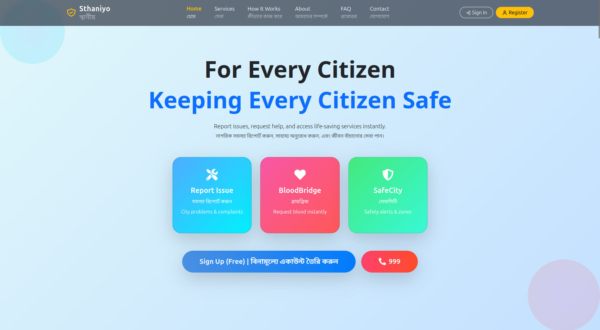
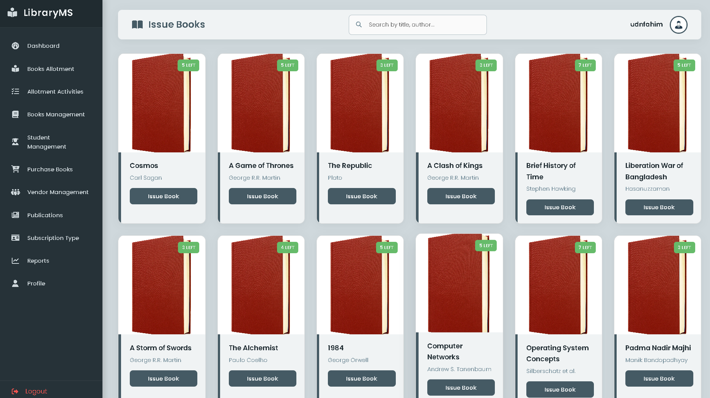

Architectural
Solutions.
Focusing on scalable backend orchestration, identity management, and secure API design.
Stack
Spring Boot
Focus
Security

Sthaniyo
Identity Node
JWT/OTP
A centralized citizen service platform using JWT + OTP dual-factor authentication. Optimized for high-concurrency requests with a Spring Boot backend and React frontend integration.

Registry Core
Persistence Layer
JPA/Hibernate
An enterprise-grade modular backend for library orchestration focused on Clean Architecture, SQL optimization, and RBAC security implementation.
Microservices Orchestrator
Upcoming deployment: Implementing a distributed banking API with Spring Cloud, Docker containerization, and RabbitMQ messaging.
In Development